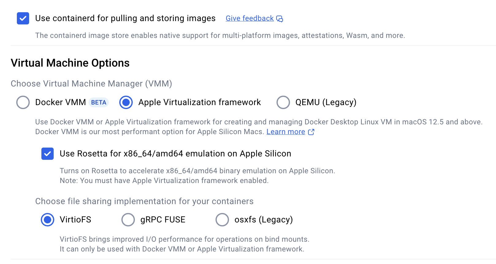

Lava Installation and Operation¶
Info
Lava requires Python 3.9+. The minimum recommended version is 3.11.
Warning
Support for Python 3.9 ends with lava v8.2 (Kīlauea).
There are two distinct paths for deploying lava, depending on whether the goal is to:
-
Run a standalone, locally hosted worker for development, experimentation or debugging; or
-
Run a fully AWS hosted worker.
Both options require the core realm / worker AWS components, such as the, DynamoDB tables and worker SQS queues. The first option assumes the lava worker will run on the local desktop and hence does not require any AWS EC2 compute resources. The second option assumes the lava worker will be running on one or more EC2 instances.
A lava realm can simultaneously contain workers of both types.
Let's compare the two options in more detail.
| Local Install | AWS Hosted | |
|---|---|---|
| Lava repo | Not required. Use pre-built components. | Required. |
| Realm AWS components | Required. | Required. |
| Worker AWS components | Minimal (worker SQS queue, KMS keys, S3 etc). No EC2. | Required, including IAM, EC2 etc. |
| Worker compute | Local PC native (macOS, Linux) or one of the pre-built lava docker images. See Running Lava in Docker. | AWS EC2 instances based on the lava AMI. |
| Worker code deploy | Basically pip install or docker run. See Desktop Lava Workers and Docker Based Lava Workers. |
A fully self-contained lava code bundle is placed in S3 for workers to find and install on boot. No pip install. Can't have production hanging on PyPI. |
| Worker startup | Manual. | Fully automated. |
| Worker security | Permissions determined by the desktop user's AWS IAM profile. | Permissions determined by dedicated IAM components created for the realm / worker. |
| Suitable for production | No. | Yes. |
| Suitable for multi-user | No. | Yes. |
| AWS Costs | Negligible for light usage. | Primarily EC2 costs. |
A quick navigator for both install options is provided below. Subsequent sections provide a lot more detail.
Installation of a locally hosted lava worker follows these steps:
- Create a lava realm.
- Create a lava worker. Follow the instructions for either a desktop worker or docker based worker, as appropriate.
This path does not require the lava repo to be cloned. Pre-built versions of the required components are provided, either from PyPI, or as part of a release on GitHub.
Installation of lava involves the following steps:
- Clone the lava repo and initialise the build area.
- Download the Oracle client binaries.
- Build the code bundles.
- Deploy the code bundles.
- Build the lava EC2 AMI.
- Create a lava realm.
- Create a lava worker. Follow the instructions for creating an EC2 based worker.
This path does require the lava repo to be cloned. The repo provides automation for elements of the deployment process, including creating the required artefact layout in S3.
The Lava Repo¶
Getting Started with the Repo¶
The lava repo is available on GitHub.
After cloning the repo:
cd lava
# Create the virtualenv and install required Python packages.
# This can be rerun as needed, even with an existing virtualenv.
make init
# Activate the virtualenv
source venv/bin/activate
Apart from a standard UNIX-like Python development environment, the following additional tools are required:
| Tool | Why it's needed |
|---|---|
| aspell | Spell checking the user guide. Install it on macOS with Homebrew. |
| AWS CLI v2 | Used for deployment of lava components and various other things. |
| docker | Cross platform builds, testing and building the lava docker images. Docker Desktop is just fine. |
| packer | Building the lava AMI. |
| shellcheck | Used as part of pre-commit checks. Install it on macOS with Homebrew. |
| tokei | Required to count lines of code (optional). Install it on macOS with Homebrew. |
The Oracle basic client and SQL*Plus are also required. See Oracle Client Binaries.
A Quick Tour of the Repo¶
Note
On macOS, you may want to add the dist and external-packages directories
to the exclusion list for Time Machine backups. They can get pretty big and
it's all ephemeral.
Docker in the Build Process¶
Docker is used as part of the build process for a number of lava components, either because of a requirement to match the characteristics of the target deployment environment, need for specialised tools, or because the build product itself is a docker artefact.
Components that use docker as part of the build process include:
- the lava worker installation bundle
- the lava docker images
- the lava Lambda functions
- lava tests for docker based resources (databases etc).
This has all been developed using Docker Desktop on macOS. Your mileage may vary on other platforms. These are the suggested settings in Docker Desktop on macOS.

The Local Docker Registry¶
The build process sometimes requires multi-platform docker images to provide both x86 and ARM support. This in turn requires a docker registry to which these multi-platform images can be pushed as part of the build process. Unlike single platform images that can be built and then pushed to a registry in separate steps, multi-platform images must be built and pushed in a single step.
The lava build process will start a local docker registry in a container as, and
when, required as localhost:5001. This is managed using the jindr tool
which is installed as part of the lava repo setup.
jindr --help
# Start the local registry manually, if required
jindr start
# The registry will continue to run until manually stopped
jindr stop
# List the images in the registry
jindr images
# Copy an image to ECR (latest + 8.1.0 tags)
jindr copy2ecr localhost:5001/build/lava/amzn2023-py3.11:latest 8.1.0
Oracle Client Binaries¶
Lava's oracle connector requires the Oracle Instant Client. The following packages are required:
- Basic Light or Basic
- SQL*Plus
The ZIP format for these must be downloaded from
Oracle
and placed in external-packages/oracle before any lava components are
built. There is a particular layout required. To download or update the
required bundles run the following from the top of the repository.
make oracle
Building Lava Components¶
The build process is controlled by GNU make. To get help on the build process, run:
make help
# ... or ...
make
These are the primary build targets controlled from the top level Makefile:
| Target | Description |
|---|---|
cfn |
The lava CloudFormation templates. |
preview |
The lava documentation, including the lava user guide and the API documentation. This will build the user guide and open a browser window to preview it locally. |
lambda |
The lava Lambda function code bundles. |
jinlava |
The jinlava Python package. |
pkg |
The lava worker code bundles. Additional parameters on the make command control whether the bundle is intended for the build host or a foreign host. |
tools |
The lava job framework. |
These components are built by running make in one of the subdirectories:
- the lava AMI (
ami/) - lava docker images (
docker/).
A Thunder Run for the Reckless¶
This is a quick summary of a typical build sequence. Please read the full section before launching into this. You, and possibly everyone who tries to use the mess you create, will be sorry if you don't.
This process will leave lots of artefacts in the dist directory.
# If you are using a private PyPI server, set that here.
# Do not rely on pip.conf.
export PIP_INDEX_URL=...
# Get ready to build.
make init
source venv/bin/activate
# Download the Oracle binaries
make oracle
# Build and preview the user guide because we all read the doco first, right?
make preview
# Make the bits that don't need a builder docker image
make cfn jinlava tools
# Make a couple of builder docker images. This will take quite a while.
# The process does a full Python install from source for ARM and x86.
make builder runtime=amzn2023-py3.11
make builder runtime=amzn2023-py3.13
# Make the lava worker install bundle for multiple runtimes/platforms
# First ... for our build machine.
make pkg
# Now use our builders to build for foreign hosts.
make pkg runtime=amzn2023-py3.11 platform=linux/amd64
make pkg runtime=amzn2023-py3.11 platform=linux/arm64
make pkg runtime=amzn2023-py3.13 platform=linux/amd64
make pkg runtime=amzn2023-py3.13 platform=linux/arm64
# Make the lambda code bundles. These need the amzn2023-py3.13 builder image.
make lambda
# Make the lava docker images. You might want to start this and head off to a
# lunch.
cd docker
make build-all
make check-all
# Make sure the images have been pushed to our local private docker registry.
# This registry is on localhost:5001 and runs in a container.
jindr images
Building the CloudFormation Templates¶
Note
Pre-built versions of the CloudFormation templates are provided as part of a release on GitHub.
Lava comes with several CloudFormation templates to
build the core components for realms and workers. The sources for these are in
the cfn directory. These are not deployable as-is. The CloudFormation
templates must be built by doing:
make cfn
This will place ready-to-deploy versions in dist/cfn/*.cfn.json. Automatically
generated documentation for these is placed in the same directory as
dist/cfn/*.cfn.md and dist/cfn/*.cfn.html.
Warning
Once more ... Do not deploy CloudFormation templates from the cfn/
directory. It will not work. Deploy only from dist/cfn.
| Name | Description |
|---|---|
| lava-common.cfn.json | Contains the common components that are not realm dependent. This stack needs to be deleted and recreated for each update. This is safe to do. |
| lava-realm.cfn.json | Contains the worker independent parts for creating a realm. See Creating a Lava Realm. |
| lava-worker.cfn.json | Contains the worker dependent parts for creating a worker. The realm must already exist. See Creating a Lava Worker. |
Note
Generally, it's not critical for the CloudFormation template minor version to match the deployed lava code minor version. Major versions should match.
Building the Lava Worker Bundle for the Build Host¶
The lava worker bundle is the artefact required for a deployed lava worker. It is a fully self-contained compressed tar file containing the lava code and includes all of the required Python packages. As the lava worker uses some C based Python modules, the build for the lava worker bundle must be done on the same O/S type, Python version and platform architecture as the target deployment environment.
To create the lava worker code bundle to match the build host:
make pkg
If an alternative PyPI server is being used (e.g. a Sonatype Nexus instance),
set the environment variable PIP_INDEX_URL appropriately:
PIP_INDEX_URL=... make pkg
# or ...
export PIP_INDEX_URL=...
make pkg
The build artefacts are placed in the dist directory as:
e.g.
Building the Lava Worker Bundle for a Foreign Host¶
Note
This process has changed in version 8.1 (Kīlauea). It is now possible to build lava worker bundles for different runtimes and architectures using Docker Desktop on macOS. The process has not been tested on other environments although it uses only docker standard multi-platform build capabilities.
First, terminology:
- Runtime: The operating system type + Python version (e.g.
amzn2023-py3.11) - Platform: hardware architecture.
- Foreign host: A host that differs in runtime or platform from the build host
Platform terminology is quite varied, depending on context:
| Platform | O/S terminology | Docker terminology | Oracle S/W |
|---|---|---|---|
| x86 | x86_64 |
linux/amd64 |
x86 |
| ARM | arm64 (macOS) or aarch64 (Linux) |
linux/arm64 |
arm64 |
To run a lava worker bundle on a host, the runtime and platform must match. The build process described above assumes the bundle will be deployed on a machine with the same runtime and platform as the build machine.
A foreign host build uses a docker container based on a builder image. The builder images support both x86 and ARM architectures using docker multi-platform builds.
The process involves two steps:
- Build the builder image.
- Use the builder image to build the lava worker bundle.
Building the builder image¶
The docker builder image defines the runtime and platform for the lava worker bundle it produces.
The process for "building the builder" is:
make builder runtime=<RUNTIME>
# e.g.
make builder runtime=amzn2023-py3.11
This will build a multi-platform docker image supporting both linux/amd64 and
linux/arm64 and push it to the local docker
registry. The image name is:
e.g.
Note
The builder images incorporate a Python installation built from source (for two different platforms) to ensure consistency. This can take a reasonable amount of time. Be patient.
To see which builders are available in the local docker registry:
jindr images
Check the etc/builders directory for a list of
supported foreign runtime types. The following are currently available:
| Runtime | Operating System | Python Version | Deprecated |
|---|---|---|---|
amzn2023-py3.9 |
Amazon Linux 2023 | 3.9 | Yes |
amzn2023-py3.11 |
Amazon Linux 2023 | 3.11 | |
amzn2023-py3.12 |
Amazon Linux 2023 | 3.12 | |
amzn2023-py3.13 |
Amazon Linux 2023 | 3.13 | |
rocky9-py3.9 |
Rocky Linux 9 | 3.9 | Yes |
Using the builder image¶
To build the bundles for a foreign host, first build the appropriate builder image, then:
make pkg runtime=<RUNTIME> platform=<PLATFORM>
# e.g.
make pkg runtime=amzn2023-py3.11 platform=linux/amd64
Once again, set PIP_INDEX_URL if an alternative PyPI server is being used:
PIP_INDEX_URL=... make pkg runtime=<RUNTIME> platform=<PLATFORM>
# or ...
export PIP_INDEX_URL=...
make pkg runtime=<RUNTIME> platform=<PLATFORM>
The built worker bundles are placed in the dist directory as:
Building the Lava Lambda Function Code Bundles¶
The lava lambda functions are pure Python and so are not particularly sensitive
to the build platform or runtime. Nevertheless, they are built inside a docker
container derived from the amzn2023-py3.13 builder image using the
linux/arm64 platform. This is close enough to the deployed environment.
The build process is:
make lambda
The bundles will be placed in the directory dist/lambda.
Building the Lava Docker Images¶
Lava comes with a suite of docker images that are suitable for use as base images for docker jobs. The images can also be used to create containers that run the lava worker itself.
Note
As of version 8.1 (Kīlauea), multi-platform (ARM and x86) images are built by default. Docker pull operations will automatically select the platform matching the client host unless overridden.
To build the multi-platform images do the following. The images will be built
and pushed to the local docker registry at
localhost:5001.
cd docker
# Get help -- lots of build options. Available O/S types will be listed.
make
# Build all of the images. This will push the images to our local
# docker registry at localhost:5001.
make build-all
# Do a fast (and flimsy) health check
make check-all
# ... or ... make a specific O/S (see docker/os directory)
make build os=<OS>
make check os=<OS>
# Check the local registry to see the images are present
jindr images
# Run the image that matches the local machine architecture
docker run -it --rm localhost:5001/lava/amzn2023/base
# Specify which platform we want. M-series Macs can run both arm64
# and amd64 (under emulation)
docker run -it --rm --platorm linux/amd64 localhost:5001/lava/amzn2023/base
Prior to v8.2 (Kīlauea), the standard lava build process only supported use of AWS ECR for deploying lava docker images. The images can now be deployed to ECR or a different registry.
See Docker Images for Lava for publicly available docker images.
Deploying the images to AWS ECR involves creating the target repositories and copying the images from the local docker registry to ECR.
First, login to AWS for command line access.
Create the ECR target repositories, if not already present:
make ecr-repo os=...
# ... or do all at once if none of them exist yet.
make ecr-repo-all
This will also apply a lifecycle policy to the repositories to only retain 4 images, and to remove untagged images after 1 day. If this doesn't suit, modify the policy in ECR after the repository has been created.
Push images to ECR:
make ecr-push os=<OS>
# ... or push all at once
make ecr-push-all
The repositories will be created with names of the form
dist/lava/<OS>/<TYPE> (e.g. dist/lava/amzn2023/base). These can be
changed if it's critical, but it's best not to. The IAM
policies created by the supplied CloudFormation
Templates assume this structure.
If it's all too much to bear, the dist prefix can be overridden, thus:
make ecr-repo os=... prefix=...
make ecr-push os=... prefix=...
Additional, custom IAM policies will need to be attached to the lava IAM groups to provide users with access.
Deploying the images to a docker registry involves creating the target repositories (if required by the registry), and copying the images from the local docker registry to the target registry.
Note
The examples in this section assume Github Container Registry (ghcr.io)
for an account named my-github.
Update the examples as appropriate.
First, login to the registry. The makefile will not do that for you.
# Yes, I know, GHCR ignores the username but you get the idea.
docker login ghcr.io -u my-github
If the target registry requires creation of repositories prior to pushing
images, that must be done manually. GHCR doesn't require this. Don't forget
to create a repository for both base and full images.
Repositories should be named like so:
<PREFIX>/lava/<OS>/base
<PREFIX>/lava/<OS>/full
e.g. The public images are named like so:
ghcr.io/jin-gizmo/amzn2023/base
---+--- ----+---- ----+--- -+--
| | | |
registry | OS |
prefix type
Push the images:
make push registry=ghcr.io prefix=my-github
Building the jinlava Python Package¶
The jinlava package is a standard Python package that can be installed using pip. This is handy when developing lava jobs using an IDE such as PyCharm. Full API documentation is also available.
The package includes the lava APIs and all of the CLI components and utilities.
To build a source distribution of the jinlava package:
make jinlava
In Python programs, this is imported as lava:
import lava
print(lava.__version__)
Building the Lava Job Framework¶
Note
Pre-built versions of the lava job framework are (for now) provided as part of a release on GitHub. However, the preferred mechanism is to use the lava-new instead.
The lava job framework can be built thus:
# From the root of the lava code repo ...
make tools
The framework cookiecutter zipped bundle is placed in dist/dev-tools.
Building the Lava Documentation¶
The lava user guide and API documentation can be built thus:
# From the root of the lava code repo ...
make preview
This will create the user guide and open a browser window to preview it. Partial
build artefacts are placed in dist/doc.
When published, the user guide is hosted on GitHub Pages. The publishing process is simply:
make publish
If the user guide is modified, it must be spell checked:
make spell
Warning
Failure to check spelling, or, worse, recklessly adding your orthographic ignorance to the custom dictionary will result in much wailing and gnashing of teeth.
Deploying Lava Components¶
The lava code bundles can be deployed in any way that suits the target environment. However ...
The mechanism that is supported by the lava distribution is to place them into AWS S3 where they can be found, either by the supplied realm CloudFormation templates in the case of the lambda functions, or the included deployment script and EC2 instance boot scripts in the case of the worker / dispatcher bundle.
Note
Note that the supplied CloudFormation template for a lava worker is dependent on the lava EC2 AMI because of the unusual way it uses instance user data to run boot scripts to deploy the worker. Sorry about that. It's a legacy thing but it works.
Lava Component Layout in S3¶
See also: Deploying the Lava Components to S3.
The components must be installed in AWS S3 in a layout like this:
Info
s3CodeBucket and s3CodePrefix are parameters in the
realm CloudFormation template.
| Prefix | Description |
|---|---|
_ami_ |
Used by the build process for the lava AMI. It contains large packages that are baked into the lava AMI as it's quicker to get them from S3 rather than upload them to the build instance each time. It is not used in the worker boot process. |
_boot_ |
These scripts are downloaded and run during the worker EC2 boot process. The critical one for the lava worker is 50-lava.sh which downloads the worker code bundle from S3 and installs it. The source for these scripts is misc/boot/ in the lava repo. |
_dist_ |
Contains the lava distribution. Multiple lava versions can safely sit side by side in here. |
_dist_/cfn |
Contains the CloudFormation templates and associated auto-generated documentation. |
_dist_/lambda |
Contains the code bundles for the Lambda functions. Version selection is controlled by a parameter in the realm CloudFormation template. |
_dist_/pkg |
Contains the main lava worker code bundle organised by target O/S, architecture and Python version. Multiple versions are allowed. See also Lava Version Selection. |
<REALM>/<WORKER> |
Contains the worker EC2 instance primary boot scripts. While these scripts are installed on a per worker basis they should generally be identical across all accounts, realms and workers. It is possible to have a worker specific setup if required. Versions of these are provided in the misc directory of the lava repo. The supplied versions basically just download and run the scripts in the _boot_ area. |
Deploying the Lava Components to S3¶
While not mandatory, lava assumes that most environments will need to deploy all
of the built assets to AWS S3 where they can be accessed as required. This
includes the worker and dispatcher code and lambda functions. This can be
tedious to do manually so a basic deployment script is provided in
etc/deploy.sh.
It will read a YAML configuration file that tells it what to deploy and where to deploy it. It supports deployment of the following lava components (depending on the contents of the configuration file):
-
S3 artefacts in the structure illustrated above.
- lava code bundles (
_dist_/pkg/) - boot scriptlets (
_boot_/) - the lava Lambda functions (
_dist_/lambda/)
- lava code bundles (
-
The lava job framework bundle to S3
Usage is:
It should be run from the base directory of the repo. A sample deployment
configuration file is provided as deploy/sample.yaml. Format
information is contained in that file. The script is rather basic but will
attempt to avoid copying files that aren't required in a given environment or
that don't need updating.
A configuration file may contain specifications for multiple environments. These
are selected by the mandatory -e environment of etc/deploy.sh. To avoid
accidents, the configuration for an environment must specify the target AWS
account ID.
Info
The configuration file also contains parameters used to
build the lava AMI. These are ignored by etc/config.sh.
To list the possible deployable components run etc/deploy.sh -l. This will
produce something like this:
A configuration file may restrict this further by not including configuration information for some of these targets.
To deploy everything that is configured for a given environment:
# First do a dry run to see what would be deployed ...
etc/deploy.sh -n -f deploy/my-config.yaml -e dev
# Now deploy for real ...
etc/deploy.sh -f deploy/my-config.yaml -e dev
Just deploy a specific component:
# Deploy docs only
etc/deploy.sh -f deploy/my-config.yaml -e dev doc
Lava Version Selection¶
Lambda Functions¶
The lambdaVersion parameter in the realm CloudFormation
template specifies the version to use
for the lambda functions. To change versions, update the realm stack.
The stack will look for the lambda code in
s3://<s3CodeBucket>/<s3CodePrefix>/_dist_/lambda/ where s3CodeBucket
and s3CodePrefix are also stack parameters.
Lava Workers¶
The supplied misc/boot/50-lava.sh script is deployed into
s3://<s3CodeBucket>/<s3CodePrefix>/_boot_/ and runs when the EC2 worker
instance boots.
By default, the script will attempt to install the highest available version that matches the instance O/S type, Python version and architecture. However, a specific version can be selected by adding worker configuration entries to the realms table.
The package selection sequence is this:
-
If a version is specified in the realms table:
-
Look for a package with the new package naming style (i.e. version, O/S, architecture and Python must match). If one is found, use that.
-
Look for a package of the required version with the old naming style. If one is found, use that.
-
-
If a version is not specified in the realms table:
-
Find the latest matching version using the new package naming style. If one is found, use that.
-
Find the latest version using the old package name style. If one is found, use that.
-
-
Otherwise, give up and abort.
Creating a Lava Realm¶
A lava realm is created using the following process:
- Create the realms table, if it doesn't already exist.
- Add an entry in the realms table for the new realm.
- Use the realm CloudFormation template to create the AWS resources for the realm.
Once the realm is configured, there may be a few final items to perform, such as
-
Add a resource policy to the lava realm S3 bucket, if required.
-
Add subscriptions to the realm SNS topic for event notifications.
-
Configure connections and jobs for the realm.
Creating the Realms Table¶
There is a single realms table per AWS account. While it can be created by the CloudFormation template that creates an individual realm, this is not recommended as it means the resulting stack cannot be deleted without impacting other lava realms.
The recommended way to create the realms table is using the following command:
# Create the realms table. ReadCapacityUnits can be adjusted now or once the
# table is created. WriteCapacityUnits does not need to be changed.
aws dynamodb create-table --table-name lava.realms \
--key-schema AttributeName=realm,KeyType=HASH \
--attribute-definitions AttributeName=realm,AttributeType=S \
--provisioned-throughput ReadCapacityUnits=3,WriteCapacityUnits=1
Adding a New Entry to the Realms Table¶
Each realm requires an entry in the realms table. This will
look something like the following: (replace <..> with the appropriate value).
{
"on_fail": [
{
"action": "sns",
"message": "Job {{job.job_id}}@{{realm.realm}} ({{job.run_id}}) failed: {{result.error}}",
"topic": "arn:aws:sns:<REGION>:<ACCOUNT_ID>:lava-<REALM>-notices"
}
],
"realm": "<REALM>",
"s3_key": "alias/lava-<REALM>-user",
"s3_payloads": "s3://<lavaBucketName>/payloads",
"s3_temp": "s3://<lavaBucketName>/tmp"
}
The Lava Realm CloudFormation Template¶
Note
Pre-built versions of the CloudFormation templates are provided as part of a release on GitHub.
The realm CloudFormation template is located in the lava repo. See Building the CloudFormation Templates.
If the realm is going to host any workers, the lava lambda function code bundles must also have been built and deployed to S3.
Note
It is possible, and sometimes useful, to create a bare realm that will not contain any workers. In this situation, the realm consists only of the DynamoDB tables and a few other static components. A bare realm is useful where an external application needs to use the lava connector subsystem via the jinlava API but is not necessarily being orchestrated to run on a lava worker.
The template incorporates the following resources:
- The realm specific DynamoDB tables.
- The S3 bucket for the realm that will contain job payloads and outputs.
- Some KMS keys for the realm.
- An SNS topic for notifications relating to the realm.
- Lambda functions for the S3 job trigger and dispatch helper and associated IAM roles.
- Realm specific IAM components.
Template parameters are described below.
| Parameter | Required | Description |
|---|---|---|
| Version | Yes | This is a read-only informational parameter that indicates the lava version associated with the template. |
| autoscalingHeartbeatMinutes | Yes | Send auto scaling heartbeats at this frequency when workers are terminating. This tells the auto scaler that the worker is still busy finishing in-flight jobs and to give it more time before forced termination. The upper limit on the auto scaler's patience is set by the workerStopMinutes parameter. |
| createRealmsTable | Yes | If yes, the realms table will be created. It's much safer to leave this set to no and create the realms table separately. |
| kmsKeyAdmin | Yes | The IAM user name of KMS key administrator. This gets added into the resource policy of the realm's KMS keys. |
| lambdaMetricsSchedule | Yes | If set to ENABLED, an AWS EventBridge rule fires the lava-<REALM>-metrics lambda once a minute. This lambda calculates the worker backlog metric used to manage lava worker auto scaling. |
| lambdaTimeout | Yes | Timeout for the lambdas (seconds). Ignored if the lambdas are not deployed. |
| lambdaVersion | No | This parameter selects which code version is deployed for the Lambda functions. If left empty, the Lambda functions are not deployed. |
| lavaBucketName | Yes | The name of the bucket where the new realm will store job payloads and outputs. The template will create this bucket. |
| logBucketName | Yes | Name of S3 bucket for S3 logs. |
| readCapacityDataTables | Yes | Read capacity for the Dynamo DB data tables. This excludes the events table and the state table. |
| readCapacityEventTable | Yes | Read capacity for the events table. |
| readCapacityStateTable | Yes | Read capacity for the state table. |
| realm | Yes | Realm name. |
| s3CodeBucket | Yes | The name of the bucket containing the lava code bundles. |
| s3CodePrefix | Yes | The prefix in the code bucket containing the lava code bundles. |
| tmpExpiryDays | Yes | Expire files in the temp area of the lava bucket after this many days. |
| workerStopMinutes | Yes | Allow workers this many minutes to stop gracefully. When a worker is instructed to shut down by its owning auto scaling group, it is given the specified amount of time to finish any in-flight jobs before the auto scaler forcibly terminates it. This value can be as high as 720 minutes (12 hours). The value should be selected in conjunction with the worker SQS queue visibility timeout. |
| writeCapacityDataTables | Yes | Write capacity for the Dynamo DB data tables. This excludes the events table and the state table. |
| writeCapacityEventTable | Yes | Write capacity for the events table. |
| writeCapacityStateTable | Yes | Write capacity for the state table. |
Creating a Lava Worker¶
Info
It is important to read all of this section before starting to create a worker.
Each realm can have an arbitrary number of workers of different capabilities to run jobs.
Workers can run on Linux / macOS with Python 3.9+ installed.
There are different ways to run the lava worker. The worker can be run interactively or as a multi-threaded daemon. It is possible to run multiple workers on a single instance.
The first worker created will typically also serve as a dispatcher for scheduled jobs. Dispatcher workers must each run in their own operating system account to ensure crontab separation.
Creating a worker involves two distinct aspects:
-
Use the lava worker CloudFormation template to create the AWS resources required by the worker (e.g. SQS queue, EC2 components etc).
-
Create a compute environment to run the actual lava worker. The most common options for doing this are:
The Lava Worker CloudFormation Template¶
Note
Pre-built versions of the CloudFormation templates are provided as part of a release on GitHub.
The worker CloudFormation template is located in the lava repo. See Building the CloudFormation Templates.
The lava worker CloudFormation template is a single entity but it contains parameters (and associated resources) in three broad groups:
-
Core worker parameters: These are necessary for any lava worker, unrelated to where, or whether, the worker process is running. e.g. the worker SQS queue, queue depth alarm etc.
-
EC2 worker parameters: These parameters are associated with the operating resources needed for an AWS EC2 instance running the worker process. e.g. launch configuration, auto scaling group, IAM role for the worker etc.
-
EC2 instance selection parameters: These parameters control the way in which the EC2 instance type is chosen.
These are all parameters of the same template but are described separately below for clarity.
Core Worker Parameters¶
The core worker parameters and associated resources are necessary for a lava worker to exist, whether or not there is an actual worker process anywhere or where it is located.
In broad terms, these relate to resources that are not EC2 related.
| Parameter | Description |
|---|---|
| Version | This is a read-only informational parameter that indicates the lava version associated with the template. |
| alarmTopic | Name of an SNS topic for alarms. The topic must already exist. |
| autoscalingControlledTermination | If ENABLED, auto scaling controlled termination on worker nodes is enabled. Best not to fiddle with this. |
| maxAllowedQueueDepth | Create a CloudWatch alarm if queue depth exceeds this value. Set to 0 for no alarm. |
| messageRetentionPeriod | Message retention period on the worker SQS queue in seconds. Default 1 day. Must be >= 1800 (30 minutes). |
| queueDepthMinutes | Minutes worker SQS queue depth exceeds maxAllowedQueueDepth before alarming. |
| realm | Name of the realm. |
| realmLambdasDeployed | Are the realm lambda functions deployed? This should almost always be set to Yes. |
| visibilityTimeout | Visibility timeout on the worker queue (seconds). Default 1 hour. |
| worker | Name of the worker. |
EC2 Worker Parameters¶
These parameters control creation of resource required to run an EC2 based lava worker. They are triggered by setting the createWorkerInstance parameter to Yes.
| Parameter | Description |
|---|---|
| amiId | AWS EC2 Image ID for the worker EC2 instance. This should be the ID for a lava AMI. Can be left blank if createWorkerInstance is No. |
| autoscalingActionTopic | Name of an SNS topic for reporting normal auto scaling activity. If required, the topic must already exist. |
| createHeartBeatAlarm | If Yes a CloudWatch alarm will be created for a loss of heartbeat messages from a worker. Set to No for non-EC2 based workers. |
| createWorkerInstance | If Yes, the required components for an EC2 based worker will be created. Set to No if the worker will be running on an existing compute environment (e.g. local machine or parasitic on an existing worker). |
| dockerVolumeSize | If non-zero (GB) a dedicated EBS volume for docker will be added to an EC2 based worker. This is a good idea if the worker will be running docker jobs to isolate large storage needs for docker images. |
| keyPairName | SSH key pair to assign to EC2 based instances. If left empty, no SSH key is assigned. |
| rootVolumeSize | Size in GB of the root volume on an EC2 based instance. Set to 0 for the default value associated with the AMI. This would typically be increased if not creating a dedicated temporary volume or if swapping is enabled. See also tmpVolumeSize and swapSize. |
| secGroups | A list of (existing) EC2 security groups to attach to an EC2 based instance. |
| subnets | A list of (existing) VPC subnets in which EC2 based instances can be placed. |
| swapSize | Swap size in Gibibytes (0 = no swapping). This may require a bigger root volume. See rootVolumeSize. |
| tmpVolumeSize | Size in GB of a dedicated EBS volume mounted on /tmp for EC2 based instances. Set to 0 to remove. If the worker is going to be processing disk I/O bound jobs, a larger tmp volume may help due to increased provisioned IOPS. |
| workerBacklogScalingTarget | Auto scaling worker backlog. Set to 0 to disable backlog scaling. See Lava Worker Auto Scaling. |
| workerInstancesDesired | The number of desired EC2 based instances. This is used by the auto scaling group. |
| workerInstancesMax | The maximum number of EC2 based instances the auto scaling group will provision. |
| workerInstancesMin | The minimum number of EC2 based instances the auto scaling group will provision. |
| workerPublicIp | Assign a public IP to the worker. |
EC2 Instance Selection Parameters¶
The EC2 Worker Parameters described above specify how to create an EC2 based lava worker but they do not specify what instance type to use. This is done by the parameters specified below.
Two different methods of instance type selection are supported:
-
Explicit instance type provisioning: This is triggered by setting the
workerInstanceTypeparameter to a single EC2 instance type (e.g.m3.large).The required instance type will be specified in the worker launch template. The advantage of this approach is that it is simple and direct. The disadvantage is that, if AWS has a capacity shortage for the specified instance type, the auto scaler may not be able to create a worker or fully satisfy the auto scaler's demands. The risk of this seems to increase for the larger instance types.
-
Capability based provisioning: If
workerInstanceTypeis not set, the other parameters are used to indicate the capabilities required of the worker instance.These parameters control the inclusion of a mixed instances policy in the auto scaling group definition. No instance type information is included in the launch template. This gives the auto scaler the ability to choose any instance type that meets the capability requirements. Lava workers don't much care about instance type. They mostly care about memory, CPU and storage.
The advantage of this approach is increased resilience in the face of AWS EC2 capacity shortages.
| Parameter | Description |
|---|---|
| workerAllowedInstances | Comma separated list of allowed instance types (GLOBs allowed) for EC2 based workers using capability based provisioning. e.g. * Would allow any instance type. m3.*,c3.* would allow any M-series or C-series instance type that meets memory and CPU requirements. A value must be specified if workerInstanceType is not set. |
| workerBurstable | Include burstable instance types (e.g. T-series) for EC2 based workers using capability based provisioning. |
| workerInstanceType | If set to an AWS instance type, an EC2 based instance will use the specified type. If not set, capability provisioning will be used to select an EC2 instance type. |
| workerLocalStorage | Controls inclusion of EC2 instance types with local storage when performing capability based provisioning. |
| workerMemoryMax | Maximum memory in MiB (not MB) for EC2 instance types when performing capability based provisioning. Set to 0 to remove the upper limit. |
| workerMemoryMin | Minimum memory in MiB (not MB) for EC2 instance types when performing capability based provisioning. |
| workerVCpuMax | Maximum number of vCPUs for EC2 instance types when performing capability based provisioning. Set to 0 to remove the upper limit. |
| workerVCpuMin | Minimum number of vCPUs for EC2 instance types when performing capability based provisioning. |
Desktop Lava Workers¶
Once the core worker components are created for a lava worker, it is straightforward to run the lava worker on a macOS or Linux desktop, provided the user has the appropriate IAM permissions.
The setup will look something like this (not including installing non-lava prerequisites):
# Create a virtual env to be safe
mkdir lavaworker
cd lavaworker
python3 -m venv venv
source venv/bin/activate
# Install
pip3 install jinlava
# Get help
lava-worker --help
# Run a lava worker interactively for development / debugging
lava-worker --realm <REALM> --worker <WORKER> --level debug --dev
Docker Based Lava Workers¶
A straightforward way to run a lava worker on a local machine is to use one of the pre-built lava images. This will include all of the non-lava prerequisites and all of the lava utilities, include the lava worker.
# First, log in to ECR then ...
docker pull \
"<ACCOUNT_NO>.dkr.ecr.ap-southeast-2.amazonaws.com/dist/lava/amzn2023/base"
# Run the container
docker run -it --rm \
"<ACCOUNT_NO>.dkr.ecr.ap-southeast-2.amazonaws.com/dist/lava/amzn2023/base"
# Get help
lava-worker --help
# Setup AWS profile then ...
# Run a lava worker interactively for development / debugging
lava-worker --realm <REALM> --worker <WORKER> --level debug --dev
EC2 Based Lava Workers¶
Note
This is the standard shared use and production configuration for a lava worker.
Info
The following process assumes the lava deployment artefacts and the lava EC2 AMI have already been built and deployed to S3. Ensure that matching Python versions and platform architectures are selected throughout for any given worker.
The preferred deployment configuration for a production or shared-use lava worker is to use the lava worker CloudFormation template to create EC2 instances, based on the lava AMI, running the lava worker code bundle.
The setup process is:
-
Deploy the Lava Components to S3 if not already present. These will be read by the worker EC2 at boot time.
-
Install the worker boot scripts. These will be read by the worker EC2 at boot time.
-
Add worker configuration entries to the realms table to specify the run-time configuration of the worker.
-
Build the worker CloudFormation stack with these settings:
createWorkerInstance=YesworkerInstancesDesired=0createHeartBeatAlarm=No
If the
createWorkerInstanceparameter is set toYeswhen deploying the lava worker CloudFormation template, additional resources are created to host a lava worker on an EC2 instance (e.g. worker IAM role, launch template, auto scaling group etc). SettingworkerInstancesDesiredto0still creates these components but no active EC2 instances. -
Update the worker IAM role if required.
The previous step will create the required EC2 resources for the worker but not start an EC2 instance. It will also create an IAM role
lava-<REALM>-worker-<WORKER>. This will contain the core permissions to allow a worker to function. It may be necessary to add other, environment specific policies to this before starting an actual EC2 instance. -
If the worker is going to be a dispatcher, create a lavasched job in the realm jobs table. The worker jump-start process will automatically build a crontab schedule when the EC2 instance boots.
-
Update the worker CloudFormation stack with these changes:
workerInstancesDesired=1createHeartBeatAlarm=Yes
An EC2 instance will be created that can be accessed via SSM session manager. It can take a few minutes for lava to install and start. The configuration is as shown below:

The start up process for the worker is:
-
The CloudFormation template configures the the worker auto scaling group to start one or more instances.
-
The worker auto scaling group starts an EC2 instance using the lava AMI as a base.
-
The EC2 instance reads boot scripts from S3 and runs them.
-
The boot scripts read worker configuration from the realms table (lava version, how many daemons to run etc.)
-
The boot scripts read the lava code bundle from S3, install it, and configure and start the lava worker daemons.
Adding Worker Configuration Entries to the Realms Table¶
By default, the EC2-based worker boot process will attempt to install the highest available lava version that matches the host Python version and hardware architecture. It will also start a single lava worker daemon.
The realms table entry can contain parameters under the x-workers.<WORKER>
key that modify the behaviour of this process as follows. Note that a <WORKER>
value of _ in the realms table can provide defaults for all workers where
a worker specific value is not provided.
| Key | Type | Description |
|---|---|---|
| daemons | Integer | The number of worker daemons to run. The default is 1. |
| env | Map | A map of variables that will be placed in the worker's environment. |
| threads | Integer | Number of threads to run per worker daemon. |
| version | String | Lava version to install (e.g. 8.1.0). |
| workers | String | A space separated list of workers to run. This is used for parasitic workers. |
{
"realm": "prod01",
"x-workers": {
"core": {
"threads": 6,
"version": "8.1.0"
},
"_": {
"env": {
"AWS_MAX_ATTEMPTS": 10,
"AWS_METADATA_SERVICE_NUM_ATTEMPTS": 10,
"AWS_RETRY_MODE": "adaptive",
}
}
}
}
This will cause the instance to install lava version 8.1.0 on the machine and
start a worker lava-prod01-core running 6 threads. The worker will have the
three AWS_* environment variables set.
Installing the Worker Boot Scripts¶
The worker boot scripts, root.boot0.sh and root.boot.sh configure the EC2
instance and install lava. The user data in the launch template will tell an
instance created from a lava AMI to run the boot scripts
when the worker instance boots. It will also provide the S3 location to obtain
the code.
The lava repository contains versions of these boot scripts in the misc
directory. They can be used as is or tailored as required.
These scripts must be placed in the same area of S3 as the lava code in sub-prefixes specifying the realm and worker names as shown in Lava Component Layout in S3.
The supplied version of root.boot.sh basically just downloads and runs the
boot scripts from the _boot_/ prefix in the
S3 deployment area.
Parasitic Lava Workers¶
It is possible for multiple lava workers to share a single EC2 instance. In this case, exactly one of the workers will have an associated EC2 instance and the other parasitic workers will hitch a ride on that.
The host worker is created first as described above.
This is the process to add a parasitic worker:
-
Use the lava worker CloudFormation template to create an additional worker with
createWorkerInstance=No. -
Update the realm entry in the realms table to configure the extra worker to run on the same host as the existing worker (see below).
-
If the parasitic worker is going to be a dispatcher, create a lavasched job in the realm jobs table. The worker jump-start process will automatically build a crontab schedule when it the EC2 instance boots.
-
Reboot or replace the EC2 instance. Both workers should now start on the one host.
The following example shows the changes in the realms table
to add a core-bulk worker to the primary core worker.
{
"realm": "prod01",
"x-workers": {
"core": {
"threads": 6,
"version": "8.1.0",
"workers": "core core-bulk"
},
"core-bulk": {
"daemons": 2,
"threads": 8,
"version": "8.1.0"
},
"_": {
"env": {
"AWS_MAX_ATTEMPTS": 10,
"AWS_METADATA_SERVICE_NUM_ATTEMPTS": 10,
"AWS_RETRY_MODE": "adaptive"
}
}
}
}
Note the addition of "workers": "core core-bulk" entry in workers -> core.
This tells the worker boot script to run an extra worker.
The "core-bulk": { ... } section specifies the configuration of this extra
(parasitic) worker.
Points to note:
- The workers can, if required, run different versions of lava.
- The
"daemons": 2element will start 2 workers namedlava-prod01-core-bulk, each running 8 threads. - One worker EC2 host cannot run workers belonging to different realms.
Its important to be aware of the following when running multiple worker daemons with the same name on the same machine:
- This configuration is experimental.
- They will all service the same SQS job queue.
- They will all emit heartbeat messages under the same name.
- They will all produce worker CloudWatch metrics for the same metrics, if that configuration option is enabled. See Worker Metrics.
Installing Lava Locally¶
Lava can be installed locally on machines with an operating system (Linux / macOS).
There are two ways to do this:
Local Installation via pip¶
The lava package is available as a standard Python package that can be installed using pip. This is handy when developing lava jobs using an IDE such as PyCharm. Full API documentation is also available.
pip install jinlava
Warning
Be aware that there is another, unrelated, lava package out there. Just
running pip install lava will do the wrong thing so the lava
package is bundled as jinlava. Python imports still use import lava. If
you need to use both this lava and the other one, you must have a most
unusual use case.
Some optional modules are available as extras. The following modules are in the extras:
-
PyGreSQL (pgdb)
-
AWS Redshift Driver
-
Pyodbc
To install everything, including the optional extras:
pip install "jinlava[extras]"
Local Installation via a Lava Install Package¶
First, obtain (or build) the code bundle for the target O/S and machine architecture. This will include the worker and all of the lava utilities.
Info
For macOS, the bundle name will look something like
lava-8.0.0-darwin24-py3.11-arm64.tar.bz2.
The installation process is then:
# Package name depends on lava version, O/S, Python version
# and platform architecture.
PKG=lava-8.0.0-darwin24-py3.11-arm64.tar.bz2
# Extract the installer from the pkg.
tar xf $PKG install.sh
# Get help on the installer
./install.sh
# Do a clean install in the default location (/usr/local)
./install.sh -c $PKG
# See if it works. Make sure /usr/local/bin is in your path.
lava-version
Lava IAM Components¶
The lava CloudFormation templates will create a base set of IAM components, both for the lava workers and for users needing to interact with the lava environment.
These components are described below.
Lava IAM Roles¶
| Role | Description |
|---|---|
lava-<REALM>-dispatch-lambda |
Service role for the dispatch helper Lambda function. |
lava-<REALM>-metrics-lambda |
Service role for the Lambda function that calculates worker backlog metrics used for lava worker auto scaling. |
lava-<REALM>-s3trigger |
Service role for the Lambda function that dispatches jobs from S3 bucket notification events. |
lava-<REALM>-stop-lambda |
Service role for the Lambda function that signals EC2-based lava workers to shutdown as part of an auto scaler scale-in process. |
lava-<REALM>-worker-<WORKER> |
IAM role for EC2-based workers. It will have the lava-<REALM>-worker policy attached. |
Lava IAM Policies¶
| Policy | Description |
|---|---|
lava-<REALM>-worker |
Base permissions required for a worker node to function within a lava realm. |
lava-<REALM>-admin |
Permissions for an administrator for the realm. |
lava-<REALM>-reader |
Read-only access to key resources in the realm. |
lava-<REALM>-operator |
Additional permissions to that of lava-<REALM>-reader. |
Lava IAM Groups¶
IAM groups using the policies described above are also provided:
| Group Name | Policies |
|---|---|
lava-<REALM>-admin |
lava-<REALM>-admin |
lava-<REALM>-reader |
lava-<REALM>-reader |
lava-<REALM>-operator |
lava-<REALM>-reader, lava-<REALM>-operator |
The groups have the following permissions, which are restricted to the lava realm wherever possible:
| Resource | Reader | Operator | Admin |
|---|---|---|---|
| Lava bucket | R | R | RW |
| DynamoDB tables (realm specific) | R | R | RW |
DynamoDB realms table |
R | R | R |
KMS key user |
Usage | Usage | Usage |
KMS key sys |
Usage | ||
| Lava distro docker images in ECR | R | R | R |
| Payload docker images in ECR | R | R | RW |
| EventBridge rules | R | R | RW |
| Lava worker logs in CloudWatch | R | R | |
| Dispatcher SNS Topic | Publish | Publish | |
| Lava Worker SQS Queues | R | RW | |
| SSM Parameters | RW | ||
| Secrets Manager | RW |
Note
The summary above is an approximation. Refer to the actual underlying IAM policies for specifics.
The Lava GUI¶
Contemporaneous with version 8.1 (Kīlauea), a new version of the desktop lava GUI has been developed in Flet. The new GUI is a lot better than the original (which is not high praise, but it really is heaps better). The new GUI is now a separate project from the lava core.
The new GUI supports macOS and Windows.
Lava Worker Configuration¶
Lava worker configuration can be modified by setting a number of configuration
variables. For a configuration variable named xyz, lava will use the first
value in the following sequence:
- An environment variable named
LAVA_XYZ - An
XYZentry under theconfigmap of the realms table - A default value as described below.
Info
The environment and realms table are only read when the worker starts. Changing configuration variables requires the worker to be restarted. Sorry.
In the following, a Duration is a string in the form nnX where nn
is a number and X is s (seconds), m (minutes) or h (hours), d (days)
or w (weeks).
A Size is a string in the form nnX where nn is a number and X is a
case-sensitive unit specifier:
B: Bytes (default if no unit specified)K,KB: Kilobytes (1000)M,MB: MegabytesG,GB: GigabytesT,TB: TerabytesP,PB: Petabytes.KiB: Kibibytes (1024)MiB: MebibytesGiB: GibibytesTiB: TebibytesPiB: Pebibytes.
A boolean is a case-insensitive string in the form:
true,t,yes,yor a non-zero integer (True)false,f,no,nor zero (False).
General Configuration Parameters¶
| Name | Type | Default | Description |
|---|---|---|---|
| CHECK_FOR_ZOMBIES | Boolean | True | When the worker exits, it waits for all the job threads to complete. On rare occasions, a thread may hang and delay the exit unnecessarily. If this parameter is set to True, an additional check is made a few times to see if there are any worker temporary directories still present. If there are none, then it's assumed the worker can safely exit. |
| CONN_APP_NAME | String | lv-{{realm}}-{{job_id}} |
A Jinja template used to generate database client connection identifiers. It is rendered with the realm name, job ID and connection ID. See Database Client Application Identification. |
| CW_METRICS_JOB | Boolean | False | If True, the worker will generate CloudWatch custom metric data for all jobs. Can be overridden (to enable or disable) at the job level as described below. |
| CW_METRICS_PERIOD | Duration | 1m |
Period for generation of CloudWatch custom metric data for the worker itself. There is no point in setting this to anything less than 1 minute. |
| CW_METRICS_WORKER | Boolean | False | If True, the worker will generate CloudWatch custom metric data for the worker itself as described below. |
| CW_NAMESPACE | String | lava |
The namespace used for CloudWatch custom metrics generated by the worker. |
| DEBUG | Boolean | False | If True, some additional information is placed in the events table for failed jobs. |
| DISPATCHER | String | --> | Fully qualified name for the lava dispatcher executable. Defaults to /usr/local/bin/lava-dispatcher. |
| EVENT_TTL | Duration | 2d |
Time to live for records in the DynamoDB events table. |
| HEARTBEAT_FILE | String | .heartbeat |
File name (relative to TMPDIR) that will be touched once every cycle of the worker heartbeat. This is essentially a keep-alive on TMPDIR so some O/S cleanup process doesn't blow it away due to inactivity. As this is part of the heartbeat process, it is only effective if the worker is running using the -b / --heartbeat option. |
| ITERATION_MAX_DELAY | Duration | 5m |
Maximum allowed delay when rerunning a failed job. |
| ITERATION_MAX_LIMIT | Duration | 10 | Maximum allowed number of run attempts for a job. |
| JOB_LOCAL_TMPDIR | Boolean | True | If True, the TMPDIR environment variable will be set for cmd, exe and pkg jobs to point into the private temporary run area for each job. If False, the system default value of TMPDIR is used. |
| JUMPSTART_DELAY | Duration | 15s |
Delay the initial scheduler jump-start process to allow the worker to fully initialise. |
| LOGLEVEL | String | info |
The default logging level. |
| PARAM_CACHE_SIZE | Integer | 100 |
Size of the cache for SSM parameters. Must be > 0. |
| PARAM_CACHE_TTL | Duration | 2m |
SSM parameter values are only cached for the specified duration. |
| PAYLOAD_DOWNLOADER | String | v2 |
Selects either payload downloader version. Allowed values are v1 (deprecated) or v2. See Job Payloads for more information. |
| PAYLOAD_SETTLING_TIME | Integer | 1 | Wait this many seconds before attempting to use a payload downloaded from S3. This helps avoid the occasional text file busy error. If this error is appearing, try setting this to 1 or 2 seconds. (Yes, it's a kludge. Sue me.) |
| SES_CONFIGURATION_SET | String | None | SES Configuration Set name for SES email sent by lava. |
| SES_FROM | String | None | Source email address for SES email sent by lava. |
| SES_REGION | String | us-east-1 |
AWS region for the Simple Email Service (SES). |
| SQS_MAX_DELAY_MINS | Integer | 15 |
Maximum allowed delay for an SQS message in minutes. This is an AWS constraint. |
| STATE_MAX_TTL | Duration | 366d |
The maximum allowed time-to-live duration for an item in the state table. |
| STATE_TTL | Duration | 7d |
The default time-to-live duration for an item in the state table. |
| STDERR_SIZE | Size | 1024 |
The number of bytes read from stderr when running jobs to include in the DynamoDB events table. The full contents of stderr are saved in S3. If > 0, data is read from the start of the file. If < 0, data is read from the end of the file. The latter is often more useful as that is typically where a fatal error message is found. |
| TMPDIR | String | /tmp/lava |
Lava temporary directory for creating private run spaces for jobs. Not to be confused with the TMPDIR environment variable. |
Configuration for cmd Jobs¶
| Name | Type | Default | Description |
|---|---|---|---|
| CMD_TIMEOUT | Duration | 10m |
Run timeout for the job. |
Configuration for dag Jobs¶
| Name | Type | Default | Description |
|---|---|---|---|
| DAG_MAX_WORKERS | Duration | 4 * CPU count | Maximum allowed number of worker threads for dag jobs. |
| DAG_WORKERS | Duration | CPU count | Default number of worker threads for dag jobs. |
Configuration for db_from_s3 Jobs¶
| Name | Type | Default | Description |
|---|---|---|---|
| PG_COPY_TIMEOUT | Duration | 30m |
Timeout for individual client side copy operations for Postgres. |
Configuration for docker Jobs¶
| Name | Type | Default | Description |
|---|---|---|---|
| DOCKER_TIMEOUT | Duration | 10m |
Run timeout for the container. |
Configuration for exe Jobs¶
| Name | Type | Default | Description |
|---|---|---|---|
| EXE_MAX_PAYLOAD_SIZE | Duration | 10M |
Maximum payload size. |
| EXE_TIMEOUT | Duration | 10m |
Run timeout for the job. |
Configuration for foreach Jobs¶
| Name | Type | Default | Description |
|---|---|---|---|
| FOREACH_LIMIT | Integer | 10 | The default limit on loop iterations for a foreach job. This can be overridden in the job specification. |
| FOREACH_MAX_LIMIT | Integer | 25 | The maximum limit on loop iterations for a foreach job. This cannot be overridden in the job specification. |
Configuration for pkg Jobs¶
| Name | Type | Default | Description |
|---|---|---|---|
| PKG_MAX_PAYLOAD_SIZE | Size | 20M |
Maximum payload size. |
| PKG_TIMEOUT | Duration | 10m |
Run timeout for the job. |
| PKG_UNPACK_TIMEOUT | Duration | 30s |
Timeout for unpacking the job payload after downloading from S3. |
Configuration for sharepoint Jobs¶
The SP_LIST_* parameters relate to conversion between SharePoint lists and
columnar data files.
| Name | Type | Default | Description |
|---|---|---|---|
| SP_LIST_DELIMITER | String | | (pipe) |
Single character field delimiter. |
| SP_LIST_DOUBLEQUOTE | Boolean | False |
As for Python csv.writer. |
| SP_LIST_ESCAPECHAR | String | None | As for Python csv.writer. |
| SP_LIST_QUOTING | String | minimal |
As for csv.writer QUOTE_* parameters (without the QUOTE_ prefix). Default minimal (i.e. QUOTE_MINIMAL). |
| SP_LOGGING | Boolean | False |
Enable enhanced logging for the Sharepoint connector. |
Configuration for sql, sqli and sqlv Jobs¶
| Name | Type | Default | Description |
|---|---|---|---|
| SQL_BATCH_SIZE | Integer | 1000 |
Number of rows to fetch in one go. |
| SQL_DELIMITER | String | | (pipe) |
Single character field delimiter for data output. |
| SQL_DIALECT | String | excel |
As for Python csv.writer. |
| SQL_DOUBLEQUOTE | Boolean | False |
As for Python csv.writer. |
| SQL_ESCAPECHAR | String | None | As for Python csv.writer. |
| SQL_MAX_PAYLOAD_SIZE | Size | 100k |
Maximum payload size. (sql and sqlv only.) |
| SQL_OUTPUT_SUFFIX | String | .out |
Suffix for output files. (sql, sqli only.) |
| SQL_QUOTING | String | minimal |
As for csv.writer QUOTE_* parameters (without the QUOTE_ prefix). Default minimal (i.e. QUOTE_MINIMAL). |
The following parameters are specific to sqlc jobs:
| Name | Type | Default | Description |
|---|---|---|---|
| SQLV_TIMEOUT | Duration | 10m |
Run timeout for the job. |
Configuration for sqlc Jobs¶
| Name | Type | Default | Description |
|---|---|---|---|
| SQLC_MAX_PAYLOAD_SIZE | Size | 100k |
Maximum payload size. |
| SQLC_TIMEOUT | Duration | 10m |
Run timeout for the job. |
Configuration for the aws Connector¶
| Name | Type | Default | Description |
|---|---|---|---|
| AWS_ACCESS_KEY_CACHE_SIZE | Integer | 20 |
Size of the cache for AWS access keys. |
| AWS_ACCESS_KEY_CACHE_TTL | Duration | 10m |
AWS access keys are cached for the specified duration. This must be less than the duration for session credentials and should be significantly less. |
| AWS_CONN_DURATION | Duration | 3h |
The default session duration for AWS session credentials obtained by assuming an IAM role. This can be overridden in individual aws connections. |
Configuration for the email Connector¶
| Name | Type | Default | Description |
|---|---|---|---|
| EMAIL_MAX_ATTACHMENT_SIZE | Size | 2M |
Maximum allowed size of any single attachment in bytes. |
| EMAIL_MAX_SIZE | Size | 5M |
Maximum allowed size of an email message in bytes. This includes the headers, body and attachments. |
| EMAIL_MAX_ATTACHMENTS | Integer | 5 |
Maximum number of attachments per email message. Set to zero to disable attachments entirely. |
Configuration for the redshift Connector¶
| Name | Type | Default | Description |
|---|---|---|---|
| RS_PASSWORD_DURATION | Duration | 15m |
Password validity period when obtaining temporary IAM credentials for Redshift provisioned clusters using GetClusterCredentials. |
Note the same parameter is used for an equivalent purpose for the redshift-serverless connector.
Configuration for the redshift-serverless Connector¶
| Name | Type | Default | Description |
|---|---|---|---|
| RS_PASSWORD_DURATION | Duration | 15m |
Password validity period when obtaining temporary IAM credentials for Redshift Serverless clusters using GetCredentials. |
Note the same parameter is used for an equivalent purpose for the redshift connector.
Lambda Function Configuration¶
The lambda functions use the same configuration mechanisms as described above for the lava worker with the exception that they do not read any configuration from the realms table.
Setting configuration values to non-default values must be done by setting the
corresponding LAVA_* environment variable on the lambda function itself.
Configuration for s3trigger¶
| Name | Type | Default | Description |
|---|---|---|---|
| S3TRIGGER_CACHE_TTL | Duration | 60s |
The s3trigger lambda will cache lookup results on the s3triggers and jobs tables for the specified duration. A zero duration disables caching. |
| S3TRIGGER_DEDUP_CACHE_SIZE | Integer | 0 |
The number of entries in the s3trigger deduplication cache. Setting this to 0 disables deduplication. |
| S3TRIGGER_DEDUP_TTL | Duration | 30s |
The time to live for entries in the s3trigger deduplication cache. |
| SQS_MAX_DELAY_MINS | Integer | 15 |
Maximum allowed delay for an SQS message in minutes. This is an AWS constraint. |
Instrumentation and Monitoring of Lava¶
Lava has the following instrumentation and monitoring facilities:
-
Lava worker and dispatcher logging.
-
Logging to AWS CloudWatch logs for the lambda functions.
-
AWS CloudWatch custom metrics for lava jobs and internal worker behaviour.
-
Predefined AWS CloudWatch alarms.
Logging¶
Both the worker and dispatcher accept a range of options to control logging.
Capabilities include:
-
Generating a heartbeat message at a defined interval (worker only).
-
Setting logging level anywhere between
debugandcritical. -
Logging to stderr, a file or designated syslog facility.
-
Tagging log entries so they can be filtered from other unrelated logs.
-
Logging in text or JSON format.
For more information:
lava-worker --help
lava-dispatcher --help
The standard production configuration for the worker when running on the lava AMI is:
-
Set the logging level to
info -
Generate a heartbeat every 60 seconds. This is also used to trigger heartbeat
-
Log in JSON format to the
local0syslog facility which is directed to the file/var/log/lavaon the worker machine. (The messages are also included in the general system log in the file/var/log/messages.) -
The
/var/log/lavalog file is automatically replicated to the CloudWatch log group/var/log/lava/<REALM>.
A typical message (although on a single line) appears thus:
{
"event_source": "lava-worker",
"realm": "dev",
"worker": "core",
"host": "my-host",
"tag": "lava-worker",
"timestamp": "2023-05-11 15:04:36",
"level": "INFO",
"message": "Job cmd/hello-world (2ce3ac8e-0fc2-41f1-b908-998608a0b24b): Complete",
"thread": "worker-00",
"pid": 37273,
"event_type": "job",
"job_id": "test/cmd/hello-world",
"run_id": "2ce3ac8e-0fc2-41f1-b908-998608a0b24b"
}
The following search predicate would find this record in CloudWatch logs:
{ $.realm=dev && $.job=cmd/hello-world && $.run_id=2ce3ac8e-0fc2-41f1-b908-998608a0b24b }
The log group can also be queried using CloudWatch Log Insights. The (approximately) equivalent Insights query is:
fields @timestamp, @message, @logStream, @log
| filter realm = "dev" and job_id="cmd/hello-world" and run_id="2ce3ac8e-0fc2-41f1-b908-998608a0b24b"
| sort @timestamp desc
As is usual for Lambda functions, the lava lambdas also log directly to CloudWatch.
Heartbeats¶
When used with the worker startup script provided for use in production
deployments, the lava worker emits a heartbeat message to syslog every 60
seconds. These records propagate to the CloudWatch log group /var/log/messages.
A log metric filter on this group is used as the basis of a CloudWatch Metric
which underpins an alarm in the event of loss of heartbeat. This is all configured
via the worker CloudFormation stack.
As of v7.1.0 (Pichincha), the heartbeat message also contains additional worker health information. A typical heartbeat message (although on a single line) appears thus:
{
"event_source": "lava-worker",
"realm": "dev",
"worker": "core",
"host": "my-host",
"tag": "lava-worker",
"timestamp": "2023-05-11 18:09:23",
"level": "INFO",
"message": "heartbeat realm=dev worker=core",
"thread": "heartbeat",
"pid": 37273,
"event_type": "heartbeat",
"sqs": {
"messages": 0,
"notvisible": 0
},
"internal": {
"qlen": 0
},
"threads": {
"event": "OK",
"worker-00": "OK",
"worker-01": "OK",
"heartbeat": "OK",
"metrics": "OK"
}
}
The various threads perform the following functions:
| Thread | Description |
|---|---|
| event | Send events to the DynamoDB events table. |
| heartbeat | Emit heartbeat messages. |
| metrics | Send metric data to CloudWatch. |
| worker-* | Run lava jobs. |
CloudWatch Metrics¶
The lava worker can generate CloudWatch custom metrics for individual jobs and for the worker itself.
Job Metrics¶
Job metrics can be enabled at the realm level or at the individual job level. The following process is used to determine if metric data will be produced:
-
If the
cw_metricsfield is set in the job specification, that value is used to either enable or disable metric data generation. -
Otherwise, the value specified at the worker or realm level via the CW_METRICS_JOB parameter is used.
If enabled, the following job metrics are produced for each job:
| Metric | Dimensions | Description |
|---|---|---|
| JobFailed | Realm, Job | 0 if the job succeeded and 1 if it failed. |
| RunDelay | Realm, Worker | The time in seconds between job dispatch and job start. This should normally be under 10 seconds. Values above this may indicate the worker is overloaded. |
| RunTime | Realm, Job | The runtime in seconds of the job from when it started to the completion of any post-job actions. |
Worker Metrics¶
Worker metrics can be enabled at the worker or realm level via the CW_METRICS_WORKER parameter.
If enabled, the following worker metrics are produced:
| Metric | Dimensions | Description |
|---|---|---|
| MaxRss | Realm, Worker, Instance | The maximum resident set size for the main worker process. See getrusage(2) for more information. |
| PercentDiskUsed | Realm, Worker, Instance | This is a deprecated name for PercentTmpDiskUsed. It will be removed in a future release. |
| PercentDockerDiskUsed | Realm, Worker, Instance | The percentage of disk space used for the docker volume on the worker, if present. |
| PercentMemUsed | Realm, Worker, Instance | The percentage of memory used on the worker measured as the total physical memory minus the memory that can be given instantly to processes without the system going into swap. See psutil.virtual_memory(). |
| PercentSwapUsed | Realm, Worker, Instance | The percentage of swap memory used on the worker. See psutil.virtual_memory(). |
| PercentTmpDiskUsed | Realm, Worker, Instance | The percentage of disk space used for the lava temporary area on the worker. |
| WorkerThreadsAlive | Realm, Worker, Instance | The number of job worker threads that are alive. The worker thread pool size is dependent on the configuration of a particular worker daemon. This is typically controlled in the realms table. |
| WorkerThreadsDead | Realm, Worker, Instance | The number of job worker threads that have died. If not enough worker threads are active, job delays can increase. |
CloudWatch Alarms¶
The CloudFormation worker template optionally creates the following CloudWatch alarms:
-
A heartbeat alarm if the worker heartbeat message is not detected in the
/var/log/messagesCloudWatch log group for 5 minutes. This relies on the worker being configured to generate a heartbeat message every 60 seconds and the node being configured to replicate syslog messages to CloudWatch. -
An SQS queue depth alarm if the
ApproximateNumberOfMessagesVisiblemetric exceeds a value specified as a CloudFormation stack parameter. This alarm can indicate a dead or overloaded worker.
The target for the alarms is an SNS topic specified as a CloudFormation stack parameter.
Getting Internal Worker State Information¶
It is possible to get the worker to reveal some of its internal state by sending it a SIGUSR1 (signal number 30). The information is written to the logger. Typically, this is sent to syslog.
Maintaining DynamoDB Table Entries¶
Lava comes with a number of mechanisms to assist with maintaining the health of the entries in the DynamoDB tables. These include:
-
The lava job framework which provides a standardised template for creating, configuring and deploying lava jobs and associated components. It also provides support for automatic generation of checksums on table entries and configuration drift detection.
-
Deep Schema validation via the lava-schema utility.
-
Bad practice detection via the lava-check utility.
-
Checksum generation and validation for DynamoDB table entries via the lava-checksum utility and the lava job framework.
Backing Up Lava Configuration¶
When the lava DynamoDB tables are created using the realm CloudFormation template, point-in-time recovery is configured for the main configuration tables. DynamoDB maintains continuous backups of the tables for the last 35 days.
Lava also comes with two additional utilities to facilitate bulk extraction and backup of data from the lava tables.
-
lava-dump performs a bulk extract of data from a single table to a local directory. It can extract all entries with keys that match any of a list of GLOB style patterns. By default, all entries are extracted.
-
lava-backup performs a complete extract of all of the configuration tables for a given realm and stores the result in a zip file, either locally or in AWS S3. It can be run as a lava cmd job if required.
Lava Worker Management¶
Lava Worker Auto Scaling¶
Lava workers created using the provided worker CloudFormation template sit in an auto scaling group with a set of supporting resources to assist with horizontal capacity scaling and controlled worker node termination.
The auto scaling architecture is shown below.

The key components are:
-
The EC2 auto scaling group itself, named
lava-<REALM>-<WORKER>.
The minimum, preferred and maximum instance counts are specified as parameters in the worker CloudFormation stack. Workers that act as schedule based dispatchers must have all values set to 1. Other workers can have whatever is needed noting that the auto scaling can create that many instances, so be reasonable. Also note that if auto scaling is enabled, the minimum should be 1 or the auto scaler will scale down to 0 and it will never scale up. -
A lambda function,
lava-<REALM>-metrics.
This is triggered by an Amazon EventBridge schedule every minute to generate a metric that is the worker SQS job queue depth per in-service instance in the auto scaling group. This metric is used to drive the auto scaling process using a TargetTracking policy. This is referred to as the worker backlog. -
An EC2 auto scaling TargetTracking policy.
This is controlled by the worker backlog metric to cause the worker fleet to scale out or in as appropriate. The target value for auto scaling purposes is specified in the worker CloudFormation stack. See Setting the Auto Scaling Target Value. -
An EC2 auto scaling lifecycle hook for terminating nodes.
This will send an appropriate message to the Amazon EventBridge default bus. -
An AWS EventBridge rule,
lava-<REALM>-<WORKER>-terminating.
This detects the lifecycle hook message and triggers thelava-<REALM>-stoplambda function, providing it with the lifecycle event details. -
The
lava-<REALM>-stoplambda function.
This uses AWS Systems ManagerRunCommandto run the lava-stop utility on the instance. This will do a controlled shutdown of the lava worker daemons and wait for them to complete. It also inhibits further scheduled job dispatches during the shutdown process. Auto scaling lifecycle hook heartbeat messages will be issued periodically until the daemons stop, at which point a lifecycle completion message will be sent. If the daemons fail to stop in a reasonable period of time, they are killed.
Setting the Auto Scaling Target Value¶
The lava worker EC2 auto scaling process uses a TargetTracking policy based
on a custom metric referred to as the worker backlog. This is defined as
the ApproximateNumberOfMessagesVisible for the worker job queue divided by the
number of instances in the InService state in the work auto scaling group.
In short, the worker backlog is the number of jobs waiting per worker instance.
This follows the pattern recommended by AWS.
The metric is calculated every minute by the lava-<REALM>-metrics lambda function.
| Metric Name | Namespace | Dimensions | Unit |
|---|---|---|---|
| WorkerBacklog | Lava | Realm, Worker | None |
The crucial aspect of the auto scaling process is the selection of the target
value for the WorkerBacklog metric.
Method 1 - AWS Recommended Approach¶
To do this, AWS recommends the following process:
-
Estimate the acceptable latency for a job to run.
-
Estimated the average processing time (i.e. average job run time).
-
Divide the latency by the average run time to get the target value.
For example, if the acceptable latency is 10 minutes (600 seconds) and the average job run time is 20 seconds, the target value would be 30. So if the queue gets 300 messages, it will start 10 instances. This may, or may not, be what you want to happen.
Note
The number of worker instances is always capped by the maximum instance count of the auto scaling group, as specified in the lava worker CloudFormation stack.
Method 2 - Guess¶
The trouble with method 1 is that lava jobs can vary widely in run time, from seconds to hours. So the average processing time may not be a reliable data point.
An alternative approach is to disable auto scaling initially (using parameters in the worker CloudFormation stack) and monitor the SQS queue depth for a period of time. Then take an educated guess.
Tip
It's probably better to set the target too high rather than too low, initially.
Stopping the Worker Daemon¶
As of version 5.1.0 (Tungurahua), the preferred mechanism to stop the worker daemon is to send it one of the following signals to initiate a controlled shutdown:
- SIGHUP (signal number 1)
- SIGINT (signal number 2)
The worker will complete any in-flight jobs before terminating.
A second signal will cause a hard shutdown, causing in-flight jobs to be terminated and, possibly, resubmitted by SQS once the queue visibility timeout expires.
AWS Systems Manager Support¶
As of lava version 6.2.0 (Reventador), a number AWS Systems Manager command documents are provided to assist with performing operations on EC2 based worker nodes. These are deployed as part of the lava-common.cfn.json CloudFormation stack.
lava-RebootWorkerInstance¶
This command document performs the following steps:
-
Perform a yum security update.
-
Stop any further scheduled dispatches from the instance.
-
Perform a controlled stop of any lava worker daemons.
-
Reboot the instance.
When the instance reboots, the dispatch blockage will be removed and the worker daemons will be restarted.
lava-SecurityUpdate¶
This command document is a more sophisticated version of lava-RebootWorkerInstance designed specifically to perform yum security updates. It is less disruptive in that it will not reboot a worker instance unless it is necessary.
It performs the following steps:
-
Check if the instance has been up for at least a specified period of time.
-
Check if any security updates are pending. If not, exit.
-
Apply the security updates with
yum update --security. -
Check if a reboot is required. If not, exit.
-
Signal the worker daemons to stop.
-
Wait a specified period of time for the worker daemons to finish any in-flight jobs and stop.
-
Kill any worker daemons still running.
-
Reboot the instance.
The command document accepts the following parameters:
| Parameter | Default | Description |
|---|---|---|
| ExecutionTimeout | 3600 |
Execution timeout in seconds. The ExecutionTimeout must exceed the Wait duration by enough to allow the patching activity and a reboot. |
| LogLevel | info |
Logging level. Allowed values are debug, info, warning. |
| MinUpDays | 0 |
Skip the update process if the EC2 instance hasn't been up for this many days. |
| Signal | SIGHUP |
Signal the worker to stop (if necessary) with the specified signal. Allowed values are SIGHUP and SIGKILL. See Stopping the Worker Daemon. |
| Wait | 15m |
Wait for the specified duration for lava workers to stop voluntarily before killing them. |
The command document sends status messages to Amazon EventBridge as part of the process. These can be captured using standard EventBridge mechanisms to send notifications to system operators or trigger other automated action, as required. The messages look like this:
{
"version": "0",
"id": "a1ce8e44-dada-d265-2b9e-beed76ab493b",
"detail-type": "Lava Worker Instance Patching Notification",
"source": "lava",
"account": "123456789123",
"time": "2023-05-20T08:16:36Z",
"region": "ap-southeast-2",
"resources": [],
"detail": {
"instance-id": "i-082cafe1b7811a47a",
"instance-name": "lava-dev0-core",
"info": "Rebooting after security patching"
}
}
{
"version": "0",
"id": "79d96f65-1be1-50b4-fd4c-d0ae39981eb7",
"detail-type": "Lava Worker Instance Patching Notification",
"source": "lava",
"account": "123456789123",
"time": "2023-05-20T08:18:00Z",
"region": "ap-southeast-2",
"resources": [],
"detail": {
"instance-id": "i-082cafe1b7811a47a",
"instance-name": "lava-dev0-core",
"info": "Reboot complete"
}
}
lava-StopWorkerDaemons¶
This command document performs the following steps:
-
Optionally, stop any further scheduled dispatches from the instance.
-
Perform a controlled stop of any lava worker daemons.
The instance is not rebooted. Further action (e.g. to restart lava worker daemons and re-enable dispatches) requires operator intervention.
Security Patching of Lava EC2 Workers¶
The lava-SecurityUpdate SSM command document provides a convenient mechanism to perform controlled security updates on EC2 based lava workers.
This command document can be scheduled by lava itself via a standard job. The following example shows how this can be done for a given target realm (which can be different from the realm initiating the command).
{
"description": "Security patching for lava nodes",
"dispatcher": "Sydney",
"enabled": true,
"job_id": "lava/admin/secupdate/<REALM>",
"owner": "Deus ex machina",
"parameters": {
"vars": {
"realm": "dev",
"up_days": 7,
"wait_mins": 60
}
},
"payload": "aws ssm send-command --document-name \"lava-SecurityUpdate\" --targets '[{\"Key\":\"tag:LavaRealm\",\"Values\":[\"{{vars.realm}}\"]}]' --parameters '{\"Wait\":[\"{{vars.wait_mins}}m\"],\"MinUpDays\":[\"{{vars.up_days}}\"],\"ExecutionTimeout\":[\"{{(vars.wait_mins+15)*60}}\"]}' --cloud-watch-output-config '{\"CloudWatchOutputEnabled\":true,\"CloudWatchLogGroupName\":\"lava\"}'",
"schedule": "0 19 * * Sat,Sun",
"type": "cmd",
"worker": "core"
}
The IAM setup for this to work requires that the lava worker can run
ssm:SendCommand for
- The
lava-*command documents; and - For all EC2 instances with specified values of the
LavaRealmtag.
The IAM policy for the worker will include elements like these:
{
"Sid": "RunLavaCommandDocs",
"Action": "ssm:SendCommand",
"Effect": "Allow",
"Resource": [
"arn:aws:ssm:ap-southeast-2:123456789123:document/lava-*"
]
},
{
"Sid": "RunLavaCommandInstances",
"Action": "ssm:SendCommand",
"Condition": {
"StringLike": {
"ssm:resourceTag/LavaRealm": "*"
}
},
"Effect": "Allow",
"Resource": [
"arn:aws:ec2:*:*:instance/*"
]
},
The Lava EC2 AMI¶
The lava worker utilises a suite of external capabilities on the host platform. Examples include:
- A stable and predictable Linux O/S
- A compatible version of Python
- Docker
- The Postgres, MySQL and Oracle CLI binaries
- The Oracle driver and SQL*Plus binary
- UnixODBC and FreeTDS for accessing MSSQL databases
- AWS RDS and Redshift trust certificates
- AWS SSM agent for host maintenance
- AWS CloudWatch logs agent
- Some of the platform dependent Python packages (e.g. psutil).
... and, of course, ...
- The lava worker code bundle.
The lava EC2 AMI incorporates all of the required components, except for the lava code bundle itself, which is loaded from S3 at boot time. This makes it easier to roll the deployed lava version forward/backward just by changing an entry in the realms table and rebooting.
The lava AMI is based on Amazon Linux 2023. X86 and Graviton EC2 instances are supported.
Lava AMI Names¶
Lava AMI names look like so:
Note
With AMI names, the architecture for ARM is always arm64, never aarch64.
Lava worker code bundles for ARM can have either arm64 or aarch64,
depending on how the target operating system identifies its platform. You
say tomato ... (Google it Grasshopper).
Lava AMI Architecture¶
The lava AMI can be built for different CPU architectures. Typically this is one
of x86_64 or arm64.
This can affect lava job payloads for pkg jobs. If the payload contains binary components, they may have a dependency on a particular machine architecture.
Lava AMI Versions¶
Lava AMI versions are derived from the version number of a given lava release (e.g. v8.1.0). While there is generally not a hard binding between the lava worker version and the AMI version, its best to keep them as close to in-sync as possible.
Python Versions in the Lava AMI¶
The lava AMI can be built with different Python versions. This can affect lava job payloads for pkg jobs. If the payload contains Python components, they may have a dependency on a particular version of Python.
The Python version for a lava AMI is also indicated in the PYTHON_VERSION tag
on the AMI, and also in the AMI name.
Tip
If possible, use the PYTHON_VERSION tag in preference to the AMI name if
checking for Python version in case of future name structure changes.
Building the Lava AMI¶
The lava AMI is built using packer. Most of the
components for the build are in the ami directory in the lava repo. Some
components (e.g. large 3rd party code bundles like the Oracle drivers) must be
loaded to a specified location in S3 prior to the build. The build process will
do this for you. This is done to speed up the build process as it avoids the
need to transfer these to the build instance at build time.
The build process leaves the following artefacts on the AMI in ~ec2-user/packer:
-
The build components
-
The detailed log from the build.
The packer executable is also installed.
In theory, an instance based on the lava AMI can be used to rebuild the AMI itself.
The essence of the process to build the AMI is:
# Make sure the lava virtualenv is activated first!
# From the top of the lava source repo...
cd ami
# Get some help, just in case...
make help
# Build the AMI...
make ami param=value ...
This will first sync the required S3 based components from the local filesystem to S3 and then initiate the packer build. A number of tags are added to the resultant image to record things such as the corresponding lava version and the installed Python version.
The trick to the process is getting the build parameters right for the target
environment. These are either specified on the make command line with the
param=value arguments (the hard way)
or obtained from a configuration file
(the easy way).
| Parameter | Required | Description |
|---|---|---|
| ami_id | No | ID of the base AMI. If not specified, the ami_ref is read from ami-build.yaml, which is then used to lookup the AMI ID. Don't mess with this unless you really know what you're doing. |
| ami_ref | No | The ami_ref is the tail of an AWS SSM parameter name containing the ID of the base AMI. AWS provides a bunch of these parameters to simplify finding common AMIs. e.g. al2023-ami-kernel-default-x86_64. See https://docs.aws.amazon.com/linux/al2023/ug/ec2.html. If not specified, the os is looked up in ami-build.yaml to obtain the value. |
| arch | No | The CPU architecture. This must be one of x86_64 (default) or arm64. |
| config | No | Name of a YAML configuration file (in lava deploy format) containing values for any or all of the required parameters. A configuration file can contain separate configurations for different environments (e.g. dev, prod etc.). If specified, the env parameter is also required. The AMI configuration parameters are specified under the <ENV> -> ami key. A sample configuration file can be found in deploy/sample.yaml. |
| env | No | The environment identifier within a specified configuration file. |
| os | Yes | The O/S type of the AMI to be built. Allowed values are specified in ami-build.yaml and must correspond to a builder in the os directory. Currently supported values are amzn2 (Amazon Linux 2) and amzn2023 (Amazon Linux 2023). |
| instance_type | No | The AWS EC2 build instance type. This must match the CPU architecture specified by arch. e.g. If the arch is arm64, a Graviton build instance must be selected. If not specified, the value is read from ami-build.yaml. |
| ip | Yes | IP address type for the packer build instance. Either public or private |
| python_version | Yes | The Python version to build from source for the AMI (e.g. 3.11.12). |
| s3bucket | Yes | Name of the S3 bucket containing extra build resources (e.g. Oracle client binaries). |
| s3prefix | Yes | The S3 prefix containing extra build resources (e.g. Oracle client binaries). |
| sg | Yes | Security group ID (or a comma separated list of IDs) for the packer build instance. |
| subnet | Yes | Subnet ID for the packer build instance. |
| tz | Yes | Timezone to set in instances created from the lava AMI (e.g. Australia/Sydney) |
The Hard Way - Specifying Build Parameters Manually¶
The required configuration parameters can all be specified as part of the make command line, like so:
make ami \
ami_id="ami-0043df2e553ad12b6" \
ip="public" \
python_version="3.11.12" \
s3bucket="my-artefact-bucket" \
s3prefix="lava/ami/" \
sg="sg-004d25956a3bf5bd4" \
subnet="subnet-f6b6d681" \
tz="Australia/Sydney"
This gets old very quickly when building for multiple environments.
The Easy Way - Reading Build Parameters from a Configuration File¶
All of the mandatory build parameters can be placed in a YAML configuration file
(let's call it config.yaml) formatted like so:
# This is the config for the "dev" environment. The file can contain
# multiple environments.
dev:
# The underscore key is for general config
_:
# If other S3 location keys don't start with s3:// this base is used.
# Don't add trailing / here.
s3base: my-bucket/a/prefix
# Parameters for packer when building the lava ami.
ami:
# Location of additional resources for building the lava AMI.
s3: lava/ami/
# Public or private IP address for the build
ip: public
# Build instance subnet
subnet: subnet-f6b6d681
# Security groups -- this must be a comma separated list (no spaces)
sg: sg-004d25956a3bf5bd4
# Timezone set on instances created from the AMI.
tz: Australia/Sydney
# Python version to build from source
python:
version: "3.11.12"
The configuration file is in lava standard deploy format and may also contain
other parameters for deploying the lava code bundles to S3 etc. A sample version
is provided in deploy/sample.yaml.
The AMI build process then becomes:
make ami config=config.yaml env=dev
It is still possible to override individual parameters like so:
make ami config=config.yaml env=dev python_version=3.11.11
User Data for the Lava AMI¶
When a lava AMI instance boots, the normal Linux boot process will eventually
get around to running /etc/rc.local. At the end of this, a lava AMI specific
process runs all of the scripts in the directory /usr/local/etc/rc.d. A number
of these scripts examine the EC2 instance user data, expecting to find a JSON
formatted object which they search for keys that provide configuration
instructions.
The following keys are currently supported in the user data JSON. All of the top level keys are optional. If not present, the relevant script will take no action.
| Key | Sub-key | Description |
|---|---|---|
| crontab | <USER_NAME> |
A dictionary of Linux instance user names. The value for each user name is the name of an S3 object containing the crontab for that user. |
| shell | - | A string (or list of strings) containing a command (or list of commands) to run. This runs after all the other startup scripts have run. This is used by the lava worker CloudFormation template to invoke the lava installer to download, install and run the lava worker code on boot. |
| shell0 | - | Same as the shell key except this runs before any of the other scripts. |
| swap | size | If present and non-zero, swapping is enabled. The value is the swap file size in Gibibytes (1024 * 1024 * 1024 bytes). The swap file is on the root volume so there must be adequate space to hold it. More information on swap space and swap file size selection. |
| swap | file | Name of the swap file. It must be on the root volume. The default is /swapfile. |
For example, the following user-data will cause a lava AMI based instance to:
-
Install a crontab file for users
ec2-userandroot. -
Enable swapping with swap file of 2GiB.
-
Run a couple of shell commands.
{
"swap": {
"size": 2,
"file": "/swap_till_you_drop"
},
"crontab": {
"ec2-user": "s3://mybucket/ec2config/latest/ec2-user.cron",
"root": "s3://mybucket/ec2config/latest/root.cron"
},
"shell": [
"echo Hello world",
"echo Resistance is futile > /tmp/borg"
]
}
Configuring a Lava Worker EC2 Instance to Use a Lava AMI¶
The AMI used by an EC2 based lava worker is specified as a parameter in the worker CloudFormation template.
The template creates the necessary EC2 launch template and auto scaler and also ensures the instance user data is correctly constructed to install and start the lava worker(s) on boot.
To select or change the AMI, simply update the relevant worker CloudFormation stack. While this can be done from the AWS console, it is more convenient to use the lava-ami utility which displays the available, lava compatible, AMIs and the AMI specified in each lava worker CloudFormation stack. It also provides an update mode that allows a (more or less) interactive process to select and apply a different AMI to one or more lava worker stacks.